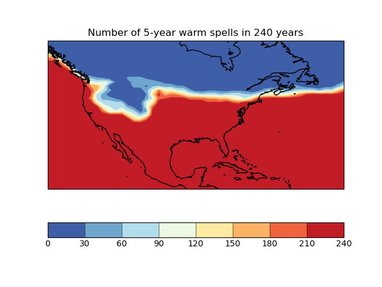

Note
Click here to download the full example code
Calculating a custom statistic¶
This example shows how to define and use a custom
iris.analysis.Aggregator, that provides a new statistical operator for
use with cube aggregation functions such as collapsed(),
aggregated_by() or
rolling_window().
In this case, we have a 240-year sequence of yearly average surface temperature over North America, and we want to calculate in how many years these exceed a certain temperature over a spell of 5 years or more.
import matplotlib.pyplot as plt
import numpy as np
import iris
from iris.analysis import Aggregator
import iris.plot as iplt
import iris.quickplot as qplt
from iris.util import rolling_window
# Define a function to perform the custom statistical operation.
# Note: in order to meet the requirements of iris.analysis.Aggregator, it must
# do the calculation over an arbitrary (given) data axis.
def count_spells(data, threshold, axis, spell_length):
"""
Function to calculate the number of points in a sequence where the value
has exceeded a threshold value for at least a certain number of timepoints.
Generalised to operate on multiple time sequences arranged on a specific
axis of a multidimensional array.
Args:
* data (array):
raw data to be compared with value threshold.
* threshold (float):
threshold point for 'significant' datapoints.
* axis (int):
number of the array dimension mapping the time sequences.
(Can also be negative, e.g. '-1' means last dimension)
* spell_length (int):
number of consecutive times at which value > threshold to "count".
"""
if axis < 0:
# just cope with negative axis numbers
axis += data.ndim
# Threshold the data to find the 'significant' points.
data_hits = data > threshold
# Make an array with data values "windowed" along the time axis.
hit_windows = rolling_window(data_hits, window=spell_length, axis=axis)
# Find the windows "full of True-s" (along the added 'window axis').
full_windows = np.all(hit_windows, axis=axis + 1)
# Count points fulfilling the condition (along the time axis).
spell_point_counts = np.sum(full_windows, axis=axis, dtype=int)
return spell_point_counts
def main():
# Load the whole time-sequence as a single cube.
file_path = iris.sample_data_path("E1_north_america.nc")
cube = iris.load_cube(file_path)
# Make an aggregator from the user function.
SPELL_COUNT = Aggregator(
"spell_count", count_spells, units_func=lambda units: 1
)
# Define the parameters of the test.
threshold_temperature = 280.0
spell_years = 5
# Calculate the statistic.
warm_periods = cube.collapsed(
"time",
SPELL_COUNT,
threshold=threshold_temperature,
spell_length=spell_years,
)
warm_periods.rename("Number of 5-year warm spells in 240 years")
# Plot the results.
qplt.contourf(warm_periods, cmap="RdYlBu_r")
plt.gca().coastlines()
iplt.show()
if __name__ == "__main__":
main()
Total running time of the script: ( 0 minutes 0.600 seconds)